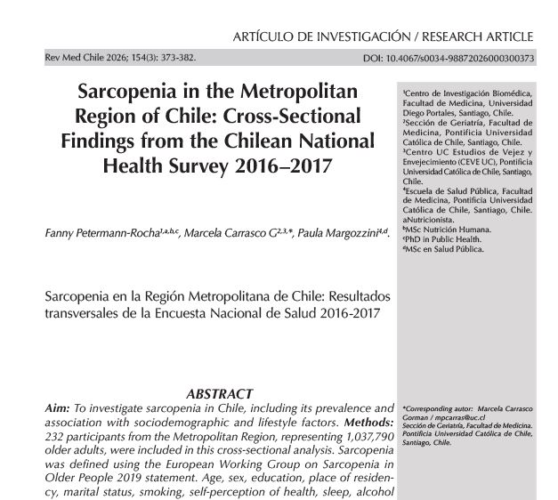

.svg)

Sarcopenia in the Metropolitan Region of Chile: Cross-Sectional Findings from the Chilean National Health Survey 2016–2017
2026Revista médica de Chile

Citation
Fanny Petermann-Rocha; Marcela Carrasco G; Paula Margozzini. (2026). Sarcopenia in the Metropolitan Region of Chile: Cross-Sectional Findings from the Chilean National Health Survey 2016–2017. Revista médica de Chile, 154(3), 373-382. https://doi.org/10.4067/s0034-98872026000300373
https://doi.org/10.4067/s0034-98872026000300373Abstract
Aim To investigate sarcopenia in Chile, including its prevalence and association with sociodemographic and lifestyle factors. Methods 232 participants from the Metropolitan Region, representing 1,037,790 older adults, were included in this cross-sectional analysis. Sarcopenia was defined using the European Working Group on Sarcopenia in Older People 2019 statement. Age, sex, education, place of residency, marital status, smoking, self-perception of health, sleep, alcohol consumption, body mass index, waist circumference, physical activity, sedentary behaviour, and suspicion of cognitive impairment were the risk factors assessed. Poisson regression models were used to analyse the cross-sectional associations of sarcopenia by sociodemographic and lifestyle factors. All analyses accounted for the complex survey design and population expansion weights in Stata 18. Results 22.1% (95% CI: 15.5% to 30.3%) of the included participants exhibited sarcopenia. After adjusting, per each year of increment of age, the prevalence of sarcopenia increased by 4% (PR: 1.04 [95% CI: 1.01 to 1.08]). In addition, people with bad and regular self-reported health had 3.06 (95% CI: 1.34 to 6.98) and 1.88-times (95% CI: 1.03 to 3.41) higher prevalence of sarcopenia than people with a good perception. No other significant associations were identified. Conclusion Considering that sarcopenia is associated with higher risk of disability and reduction in quality of life and it could begin early in life, actions to address its risk are more urgent than ever.